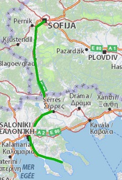
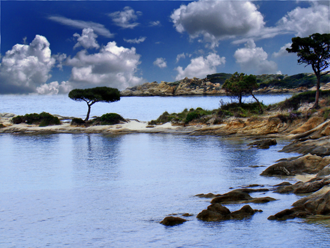

Европамоят континент
За това пътуване
Автомобил: 1030 kmОбщa Статистика
Самолет: 29415 kmАвтомобил: 26819 km
Влак: 3972 km
Кораб: 928 km
Общо: 61134 km
Градове: 52
Държави: 20
Континенти: 2
Марти на море
На 03.04.2008 се роди Марти – най, най, най... момче на света. Излишно е да казвам че животът ни се промени коренно.
В краят на лятото или по – точно на 15.09 заведохме и Марти, който беше на 5 месеца тогава, на море. Избрахме Вурвуру – селце на средния ръкав на Халкидики – Ситония.

София - Вурвуру
Местноста се оказа невероятна – спокойни и чисти плажове, заливчета и малки острови. Веднага се влюбихме в лагуната на плажа Кариди.

Вурвуру
В спокойствие и разходки се изнизаха дните на почивката. Разбира се Марти правеше плаж всеки ден и задължително топеше краче във водата. Качи се и на сърфа на тати.
От този момент Ситония се превърна в любимо място за почивка на семейството ни.